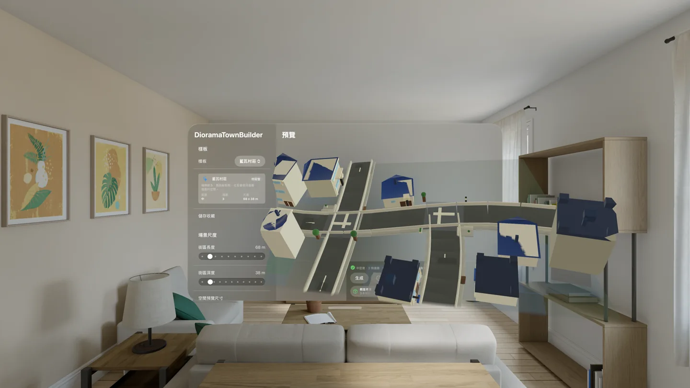
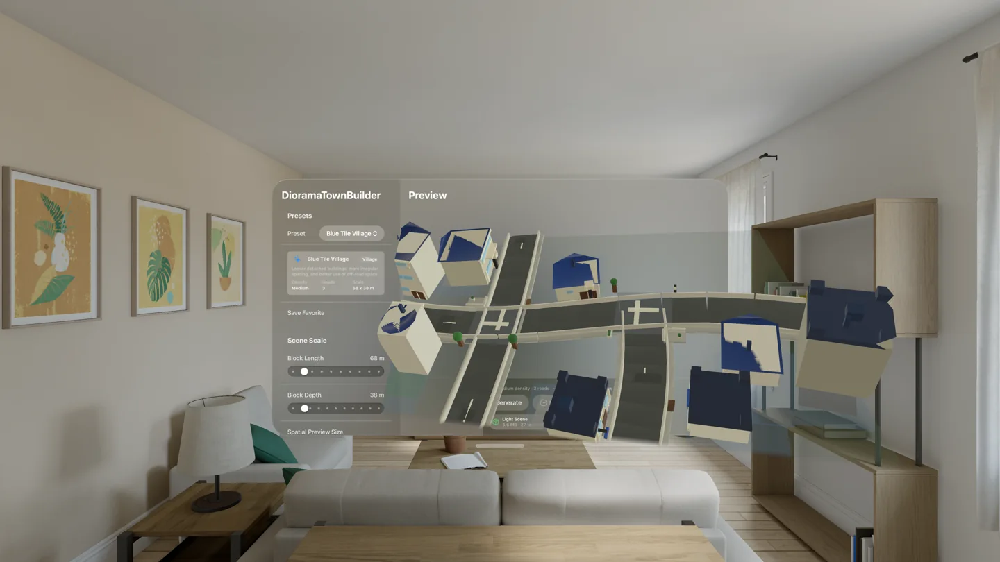

DioramaTownBuilder
DioramaTownBuilder 是一款為 Apple 平台設計的程序化街景生成工具，用來快速建立可重複、可調整、可匯出的立體小鎮場景。
iOS、macOS 與 visionOS 版本皆已上架，讓同一套街景生成流程可以從手邊快速查看，延伸到 Mac 上的參數調整與資產輸出，再進入 Apple Vision Pro 的空間預覽。
它的目標不是取代完整 3D 建模流程，而是讓創作者、開發者與空間內容設計者能在短時間內產生大量合理但帶有隨機性的街道、房屋與小型城鎮外觀，作為 App、遊戲、原型設計或 spatial experience 的場景素材起點。
- 可用裝置
- iPhone / iPad / Mac / Apple Vision Pro
- 下載方式
- 付費下載

{kind=link}

可預測的隨機街景
使用者可以透過 seed 與一組直覺參數控制場景規模、道路數量、道路寬度、房屋密度、樓高範圍、建築分布、材質風格與細節層級。相同參數與 seed 會產生相同結果，方便反覆調整、保存與重建。
iOS、macOS 與 visionOS
iOS 版本適合在 iPhone 與 iPad 上進行輕量 preset 生成與快速查看。macOS 版本作為主要生成與匯出工作區，適合調整參數、檢視診斷資訊、建立 package 與輸出 OpenUSD / USDZ。visionOS 版本則提供快速匯入與空間預覽，讓使用者能在 Apple Vision Pro 上以獨立空間物件方式查看生成結果，並直接移動、縮放與旋轉場景。
主要功能
- 程序化生成街道、建築、門窗、屋頂、人行道與街道物件
- 支援 seed，可重複生成相同場景
- 可調整場景尺寸、道路配置、房屋密度、樓高、分布離散程度與材質風格
- iOS 支援輕量 preset 生成與快速檢視
- macOS 3D 預覽支援旋轉、縮放與俯瞰檢視
- visionOS 支援空間預覽與手勢操作
- 支援 App 專屬 package、OpenUSD 與 USDZ 匯出
- 支援 package 匯入與 share extension 工作流程
- 內建效能與生成摘要資訊，方便依裝置能力調整細節
設計理念
DioramaTownBuilder 的核心價值是「快速、合理、不可預測」。它使用簡化的統計分布與 heatmap 概念，讓建築傾向靠近道路與交通便利區域，同時仍保留低機率的離散分布，使場景看起來不像單純貼齊道路的規則排列。
這讓生成結果能在城市街區與鄉村聚落之間取得平衡：有秩序，但不僵硬；可控，但不死板。
適合用途
- visionOS / macOS App 場景原型
- 遊戲或互動體驗的低多邊形街景素材
- 空間介面與 diorama-style 場景測試
- OpenUSD / USDZ workflow 的快速資產草稿
- 教學、展示、概念設計與創作實驗
Diorama 系列基礎
DioramaTownBuilder 也是未來 Diorama 系列工具的基礎之一。其核心生成與匯出能力已整理為可重用的 DioramaTownCore，讓後續工具能在相同的資料結構與 OpenUSD workflow 上繼續擴展。
DioramaTownBuilder
DioramaTownBuilder is a procedural street-scene generator for Apple platforms, designed to quickly create repeatable, adjustable, exportable 3D town dioramas.
The iOS, macOS, and visionOS versions are now all available, so the same street-scene generation workflow can move from quick handheld review, to parameter tuning and asset export on Mac, to spatial preview on Apple Vision Pro.
It is not meant to replace a full 3D modeling workflow. Instead, it helps creators, developers, and spatial content designers produce many plausible but randomized streets, houses, and small-town scenes as starting points for apps, games, prototypes, and spatial experiences.
- Devices
- iPhone / iPad / Mac / Apple Vision Pro
- Download
- Paid download

{kind=link}

Predictable Randomness
Users can control scene scale, road count, road width, building density, height range, building distribution, material style, and detail level through a seed and a set of direct parameters. The same parameters and seed produce the same result, making scenes easy to adjust, save, and rebuild.
iOS, macOS, and visionOS
The iOS app is designed for lightweight preset generation and quick review on iPhone and iPad. The macOS app is the main generation and export workspace for adjusting parameters, reviewing diagnostics, creating packages, and exporting OpenUSD or USDZ. The visionOS app provides fast import and spatial preview, letting users inspect generated scenes as independent spatial objects on Apple Vision Pro, then move, scale, and rotate them directly.
Key Features
- Procedural generation of streets, buildings, doors, windows, roofs, sidewalks, and street objects
- Seed support for repeatable scene generation
- Adjustable scene size, road layout, building density, height range, distribution looseness, and material style
- iOS support for lightweight preset generation and quick review
- macOS 3D preview with rotation, zoom, and top-down review
- visionOS spatial preview and gesture interaction
- Export support for app packages, OpenUSD, and USDZ
- Package import and share extension workflows
- Built-in performance and generation summaries for tuning detail by device capability
Design Philosophy
The core value of DioramaTownBuilder is speed, plausibility, and unpredictability. It uses simplified statistical distribution and heatmap concepts so buildings tend to appear near roads and accessible areas, while still allowing low-probability scattered placement.
This helps generated scenes balance city blocks and rural settlements: ordered but not rigid, controllable but not lifeless.
Useful For
- visionOS and macOS scene prototypes
- Low-poly street-scene assets for games or interactive experiences
- Spatial interface and diorama-style scene testing
- Fast asset drafts for OpenUSD and USDZ workflows
- Teaching, demos, concept design, and creative experiments
Foundation for Diorama Tools
DioramaTownBuilder is also one foundation for future tools in the Diorama series. Its core generation and export capability has been organized as reusable DioramaTownCore, allowing later tools to build on the same data structures and OpenUSD workflow.